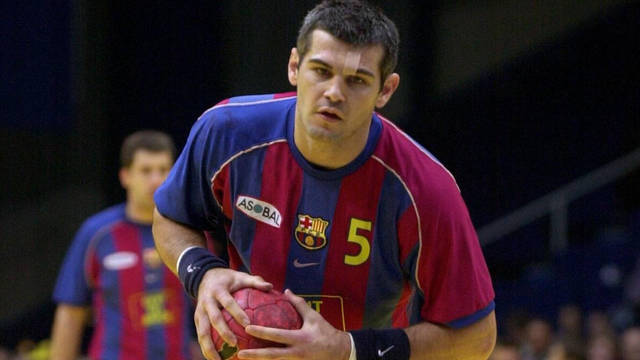
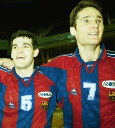

Inicio
Historia En El Deporte

Se inició como jugador en las categorías inferiores del Balonmano Granollers. Jugó tres temporadas, entre 1987 y 1990, en el primer equipo del Balonmano Granollers, revelándose pese a su juventud como uno de los mejores centrales de la Liga ASOBAL. En 1990 fichó por el FC Barcelona que entrenaba Valero Rivera. Desde el principio fue titular indiscutible y uno de los pilares del FC Barcelona que, en los años 90’ conquistó todos los títulos del balonmano español y europeo. Participó en 205 partidos de la Selección de balonmano de España, compitiendo en dos Juegos Olímpicos, seis Campeonatos del Mundo y tres Campeonatos de Europa.Su última participación en una gran competición con la selección española se produjo en el Mundial de Portugal donde quedó en cuarta posición, tras perder en semifinales contra Croacia. Enric Masip fue el capitán. A fecha de mayo de 2009, ocupa el puesto 8 en cuanto a número de veces internacional por detrás de David Barrufet (280 partidos), Lorenzo Rico (245), Juan Francisco Muñoz Melo, Mateo Garralda, Eugenio Serrano, Javier Cabanas y Demetrio Lozano. Se retiró como jugador en activo en 2004, debido a sus constantes problemas con las lesiones de espalda. Su último partido fue en febrero de ese año. Desde 2003 trabaja profesionalmente en el FC Barcelona, actualmente como secretario técnico de la sección de balonmano y anteriormente trabajó como uno de los responsables de la Fundación FC Barcelona.
Un jugadorazo de mentalidad ganadora única, de un dominio total del juego y de una disciplina y compromiso inigualables. Lo ganó absolutamente todo a nivel de clubes, siendo pieza clave del Dream Team que aún hoy, mantiene cifras que nadie ha podido alcanzar. Un fijo también en la Selección donde, junto a otras leyendas, puso los cimientos a base de primeras medallas que han apoyado los enormes éxitos cosechados con posterioridad. Pero Enric Masip es aún todavía más. Dirigiendo el Campus más longevo de España, trabaja todo el año para que en verano, los chicos que participan del mismo aprendan, no solo balonmano, sino fundamentalmente los valores del deporte que el aprendió y que hoy día sigue abanderando. Una super estrella del planeta balonmano que nos ha tratado con un cariño y una dedicación que nunca podremos agradecer del todo. Un imprescindible de nuestro deporte que debería seguir siendo protagonista porque su sabiduría no se debería dejar escapar.
